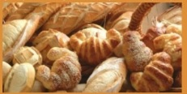
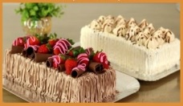

Temos um processo de fabricação 100% caseiro. Esse foi um dos maiores motivos que fizeram que a padaria Plus crescesse com a proporção que temos hoje. Temos um pão único de pura qualidade.
Uma viagem para itália nos fez conhecer alguns ingredientes que são essencias para para que a massa do bolo fique macia e gostosa. Hoje temos um produto incomparável.
Estamos localizados na Avenina 123
Nosso telefone é: 99-99999-99
Estamos funcionando nos seguintes horários:
Segunda á sexta-feira: 7h ás 16h
Sabados e Domingos: 7h ás 13h
Feriados: 8h ás 12h